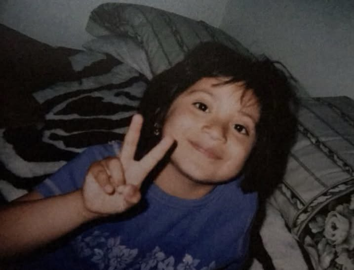

There's a version of people that lives online. Polished, repeated, easy to understand. It's the version that gets shared, supported, and turned into something larger than the person themselves.
And then there's memory. The kind that doesn't disappear just because a different story is easier to tell.
This is mine.
I reached out to Irvin Garcia more than once. The first two times were on Instagram, quiet, private, nothing public. No audience. No call-out. Just me, trying to open a door. Very lighthearded. Nothing.
So I went further. I found his professional email through his own marketing website, Foos in Medicine, and I wrote to him directly. A real email, with my real return address, with a recount of our experiences so he would know exactly who I was and exactly how to reach me back. I did everything right. I gave him every possible way to respond.
Three attempts. One social platform. One professional email addressed to him by name.
Still nothing.
And I want to be clear about how that landed for me because it didn't feel like an oversight. Three attempts across two different platforms felt, to me, like being seen and left unanswered again.
It's hard not to experience that as a choice. As being seen and dismissed, again. As someone deciding, whether consciously or not, that I didn't require a response.
And I watched him keep going, the posts, the platforms, the image he's building online. The struggling Latino who made it. The inspiring story of grit and perseverance @irvingarcia, living his best life, curating his legacy.
But there's is a version of Irvin Garcia that I remember that doesn't exist in any of those spaces.
It's not the version that get's posted, or shared, or invited into rooms.
It's the one that I experienced when he thought no one else was watching him.
I was around six years old. I know this because my childhood is mostly fog. Trauma has a way of blurring the details while keeping the feeling razor sharp. What I remember isn't a timeline. It's a temperature. The cold of being looked at like you were less than. The specific sting of being told, repeatedly, that you were ugly. That you were stupid. Annoying. That you should just go away.
Before I was seven, I already carried words that were never mine to carry. All fed to me by the boy who lived next door, Irvin Garcia.
Irvin was my next door neighbor. We lived next door to each other in a small duplex complex in Shelton, Washington. We did not share the same duplex, but ours were right next to each other. He shared his duplex with a Pacific islander family. I shared my duplex with a Guatemalan family. So my family and the Garcia family were the only two Mexican families in that little cul de sac.
I hold onto that detail because of how he now speaks about community and representation. The narrative being shared is one of struggle, perseverance, and uplifting others. And those things matter. But when I look back at our childhood, what stands out to me is how that sense of shared culture didn't translate into kindness in the moments that were closest to home.
The cruelest thing about childhood bullying isn't what it does to you then. It's what it convinces you about yourself for decades after.
I want you to sit with that for a second, because if you're reading this, you probably already know it in your body. You know the way a certain tone of voice can collapse twenty years in an instant. You know the way success looks different when it belongs to someone who made you feel worthless.
The funniest thing about him was his beloved trampoline. Every other child that came by was allowed on it but me. I tried finding ways around this, maybe if i asked his brother? "um no, you'd have to ask irvin." his parents? "Um no, Irvin will say no." and honestly, the garcias weren't all bad. I liked playing with his little sister. The older brother was always nice, he had a kind face.
But Irvin? I could tell he didn't like me. It felt strange and pointed, like I had been decided on before I even opened my mouth.
Irvin, I remember the day you told me you had something to show me in your garage. I was excited. Genuinely
excited, because you had
never been that nice to me before. I thought maybe something had shifted. Maybe today was different.
You blasted a tower speaker system. Heavy metal. Dogs barking. As
loud as it would go. I ran out crying. You and your friends laughed. You all thought it was hilarious.
I could laugh about it if my life at home hadn't already been what
it was. (Because you were kids) BUT my father was completely abusive. Alcoholic. He came home on benders to
terrorize us. My mother worked herself to exhaustion picking up his
slack. Every time I stepped outside I was looking for relief from
something I couldn't name yet but could feel in every room of my house.
I wasn't looking for a best friend. I just wanted one afternoon that
didn't hurt.
If I had to guess, I think a lot of it came from resentment toward his parents. Being sent outside to collect his sister, pull her away from whatever we were doing, bringing her back in. Over and over. I was an easy target for his frustration he couldn't direct at the people who actually caused it.
I'm not saying that makes it okay. I'm saying little kids don't invent cruelty from nothing. They learn where to put feelings that have nowhere else to go.
I want to ask that directly: if this is someone who now brands himself as a champion of the Latino community, what does it say to me that basic dignity felt absent for a little girl of the same culture next door? What does "building Latinos up" mean to me when it didn't start at home, with the child standing right in front of you?
The trampoline is small. The question it raises is not.
Because values aren't built in speeches. They're built in the small moments, in who you let in, and who you turn away. In what you teach your children about the neighbors. About the ones who look like them, who come from where they come from, who are just trying to exist in the same space.
Here is something nobody talks about: the bully to positions of power pipeline. In my view, it is real, it is documented, and it should make all of us deeply uncomfortable.
The same kids who learned early that dominance works… often carry those instincts into adulthood, into positions of power, including fields like medicine and leadership.
Think about what medicine requires at its core: the ability to see a person in front of you as fully human. To listen. To not let your ego override their pain. To sit with someone who is scared and make them feel safe. These are not skills you develop despite never being taught empathy, they are skills that require it.
I'm not saying every bully becomes a bad doctor. I'm saying that for me, it's hard to completely separate the child I remember from the polished adult image I see now. Maybe those traits changed. Maybe they didn't. What I know is that those early experiences changed the way I look at power, credentials, and the people who hold them.
For me, it raises bigger questions about how we think about who we trust in these roles, and how much of a person's story we actually see.
And the rest of us, the ones who were told we were nothing, we're supposed to just scroll past it and feel inspired.
Let's talk about image sanitization. Because this is the age of the personal brand, and personal brands have one job: to show you exactly what someone wants you to see and nothing else.
Irvin Garcia has built his around Foo's In Medicine. Let's sit with that name for a second. "Foo" from fool, spoken through a Chicano accent, the kind of word that comes from the block, from the culture, from a specific lived experience of being brown in America, typically in places like California, Chicago, Texas.
Here's what's funny to me though. We're not from a barrio. We're from Shelton, Washington. A logging town. Overwhelmingly white. Being Mexican was not cool, at least back then, it was something you quietly navigated, something you tried to smooth over so you could just fit in like everyone else. There was no block. No street credibility. Just pine trees, mill workers, and two Mexican kids trying to figure out how to exist in a place that wasn't really built for them.
He didn't grow up a foo, at least not in the way that word gets sold online now. To me, that identity feels like something shaped later, once it became more legible and marketable. That identity he's selling? He built it after the fact. I was there for the original version. Before the rebrand, before the platform, before the aesthetic. I know exactly where he came from. And it wasn't the barrio lol.
You cannot present yourself as authentically "of the people" while leaving out the people you've impacted along the way. You cannot turn cultural identity into something marketable while the person who grew up beside you, who shared that same experience of being brown in a predominantly white town, is expected to stay quiet.
This is what image sanitization does. It doesn't require lying. It just requires leaving things out. A carefully curated silence becomes its own kind of distortion. Social media is perfectly designed for it. Every post is a choice. Every caption is a choice. Every story about struggle and resilience is a decision about which struggles make the cut, and which ones which people get edited out entirely.
He is not the first person to build something admirable on top of something unresolved. But I am no longer willing to be part of a story that leaves me out, without at least saying that I was there.
The silence from his inbox reinforced what I already feared: that there may never be any reckoning with it. The version of himself he's selling doesn't seem to have room for me in it. I feel like an inconvenient chapter he has chosen to leave out.
But I exist. And so do you.
This is for every person who has ever watched their bully thrive and felt that old, familiar smallness creep back in. Your feeling is valid. And it is not the truth.
The "less than" feeling he planted in me was never true. The words he used "ugly, stupid, annoying" those were never a reflection of me. They were a reflection of a child who, in my experience, had already learned that power means making others small. That is what it felt like I was up against then. And whatever degree or platform he has now, that memory still hasn't left me.
I gave him multiple chances to respond. For me, that silence didn't feel neutral. It felt like a lack of accountability.
I'm writing this for the ones who were also told to go away. For the ones frequently called stupid and ugly. The ones who were excluded from the small things. The ones whose bullies are now doctors, speakers, influencers, nurses, building brands and narratives of resilience that conveniently omit the people they stepped on.
Your story is part of their story, whether they include it or not.
You are allowed to say so.
You are allowed to take up space in a narrative that tried to erase you. You do not have to be gracious about being dismissed. You do not have to perform forgiveness you haven't found. You do not have to watch someone build a legacy on an incomplete truth and stay quiet about it.
His highlight reel is not the whole story.
You are the rest of the story.
And honestly? He'll probably read this and say he's got haters. That's fine. Maybe we'll even get an anti-bullying campaign out of it. The voice of Latino youth, finally speaking out about the importance of kindness. To not bully because you don't know what that person could be experiencing at home. Very inspiring. Very on brand.
Who nominated him for that title, by the way? Because I don't remember being asked .·°՞(˃ ᗜ ˂)՞°·.
